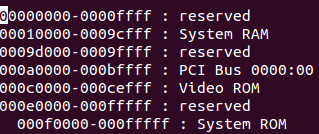
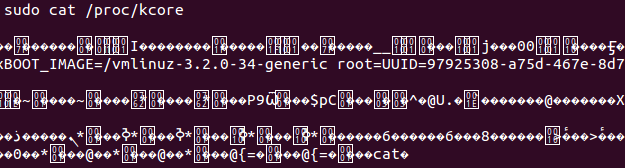

/proc dizini sistemi izleme ve tahlil yapma anlamında çok önemli bir yerdir. Hâlihazırda çalışan uygulamaları inceleyebileceğimiz ve müdahale edebileceğimiz gibi sistemin sabit özellikleri hakkında da bilgilere erişebiliriz.
Merhaba. Bu sayıdaki konumuz /proc dizini olacak. Yazımızda /proc klasöründen ve işlevlerinden bahsedeceğiz.
Sistemin tanımını bir cümle ile yapmak kolay değildir lakin temel olarak sistem, birtakım görevler ve bunlardan doğan işlemler bütünüdür. Her görevin ve beraberinde işlemin bir süreci vardır. İşlemler bütünü olması ve bu işlemlerin merkezi olmasından dolayı sistemi izlemek, durum tahlili yapmak ve gerekirse müdahale etmek çok önemlidir. Linux sistemlerde sistemin durumunu inceleme, kayıtlarını izleme, sistem hakkında bilgiler edinebilme ve çalışan programların bilgilerini öğrenebilmemiz için özel dosyalar barındıran sistem klasörünün adı /proc’dur. Sistemdeki yolu da /proc şeklindedir.
/proc klasörü içindeki dosyalar, okunmaya çalışıldığında içerdiği fonksiyon tarafından bir değer üretir. Bu dönen değer, yapılan izlemenin ve tahlilin sonucudur. Bizim /proc klasörü içinden çağırıp okumaya çalıştığımız her dosya aslında sonuç dönmek üzere bir çağrıdır, diyebiliriz.
/proc aslında dosya sistemi olmadığı hâlde geçici bellekte oluşturulan sanal bir dosya sistemidir ve diskte yer kaplamaz. /proc dizini de yerel bir aygıtmış gibi sisteme eklenir. Eklendiği yol bizim de üzerinde çalıştığımız /proc yoludur. /proc dizinini fstab dosyası, sistemin açılışında yükler ve sisteme bağlar. (/etc/fstab)

Yukarıda da tarif ettiğimiz gibi /proc dizininden hâlihazırda çalışan programların bilgilerine ulaşmak mümkündür. Örneğin top komutu ile çalışan uygulamalara bir bakalım.

Top komutunun çıktısında gördüğümüz soldaki kolon, işlem numarasını belirtir. /proc dizininin altında her işlemin numarası ile adlandırılmış işlemin ve sürecinin detaylarını barındıran klasörler-dosyalar yer alır. Şöyle ki /proc klasörü altında numaralardan oluşan klasörleri ve sistem hakkında bilgiler içeren diğer dosyaları görebiliriz.

Örneğimizden devam edecek olursak, 17 numaralı işlemin dizini olan 17 isimli klasörün içine baktığımızda o işleme ait dosya ve klasörleri görürüz. Buradaki cwd, exe, root dosyaları asıl dosyalarına kısayoldur. Cwd işlemin çalıştığı asıl klasörü temsil eder. Exe işleme ait olan çalıştırılabilir dosyaları temsil eder. Root ise işlemin ana dizinini temsil eder. 17 isimli dizinin diğer dosyalarına baktığımızda, mesela cat status dediğimizde gelen çıktıda, migration/3 isimli işlemin beklemede olduğunu gözlemliyoruz.

Aynı şekilde 17 isimli işlem için oluşan dizin dışında diğer dosyalar ile başka işlemlerin ve durumların bilgisini alabiliriz. Şimdi /proc dizini altındaki dosyalara görevleri ile birlikte değinelim.
/proc/1 – Örneğini yukarıda verdiğimiz gibi 1 isimli sürecin dizinidir. Bu dizinin içinde sürece ait durum bilgisi alabileceğimiz dosyalar mevcuttur. Yine yukarıda örnek verdiğimiz 17 isimli süreç ve dizini gibi.
/proc/cpuinfo – Sistemin işlemcisinin üreticisini, modelini, hızını ve teknik detaylarını öğrenebileceğimiz dosyadır.
/proc/iomem – Geçici bellek için inceleyebileceğimiz dosyadır. Geçici bellek (RAM) adreslerinin nerelere ayrıldığını gözlemleyebiliriz. Yandaki çıktıda örneğin Video Rom için ayrılan adres aralığını, önceden rezerv edilmiş adres aralıklarını görmekteyiz.

/proc/devices – Sistemde o an çalışan aygıt sürücülerinin listesini görürüz.
/proc/filesystems - Sistemde tanımlı olan, kullanılabilen dosya sistemlerini görürüz. Ayrıca bu tür durum bildirmeyip ayar tutan dosyalarda değişiklikler yapabiliriz.
/proc/interrupts – Sistemde o an kullanılan ve beklemede olan kesmeleri gösterir.
/proc/ioports – Sistemde kullanılan giriş/çıkış portlarını gösterir.
/proc/mounts – Sisteme bağlı olan aygıtların listesini tutan dosyadır.
/proc/kcore – Sistemdeki fiziksel belleğin bir görüntüsünü verir. Aldığımız çıktı, gerçek belleğin görüntüsüdür, gerçek bellek değildir. İlgili dosyayı incelemek root yetkisindedir.

/proc/kmsg – Sistem mesajlarını tutan dosyadır. Dosyayı incelemek root yetkisindedir. Yoğun bir dosya olduğundan, dosya çağrıldığında cevap vermesi uzun sürebilir.
/proc/loadavg – Sistemin ortalama yükünü gözlemleyeceğimiz dosyadır. Sistemin o an ne kadar çalıştığını gösterir.
/proc/meminfo – Sistemin bellek kullanımının dökümünü veren dosyadır. Çıktısında toplam bellek miktarını kullanılmayan bellek miktarını ve takas alanını gözlemleyebiliriz.
/proc/net – Ağ bilgilerini alabileceğimiz ve durumunu gözlemleyebileceğimiz bir proc dizinidir. İçeriğinde dosyalar ve dizinler mevcut olup ağ bağlantıları, protokoller, mesajlar ile ilgili bilgi alabiliriz.
/proc/diskstats – Disk durumlarını tutan bir dosyadır.
/proc/uptime – Sistemin ne kadar zamandır çalıştığını tutan dosyadır.
/proc/version – Sistemin çekirdek versiyonunu tutan dosyadır.
Görüldüğü üzere /proc dizinine direkt ulaşarak ve yukarıdaki gibi kullanarak bilgiler edinebilir ve /proc dizininin hizmetinden yararlanabiliriz. Bunlarla beraber ayrıca birtakım komutlar da bize /proc dizinine bakmadan bilgi alma imkânı verir. Tabii ki /proc dizinini kullanarak. Buna birkaç örnek verecek olursak;
#free komutu
/proc/meminfo dosyasını okur ve çıktıda bize kullanılmayan bellek miktarını belirtir.
#uptime komutu
/proc/uptime ve loadavg dosyalarını okur ve çıktısında bize saati, sistemin çalıştığı süreyi ve sistemin ortalama yükünü verir.
#mount komutu
/proc/mounts dosyasını okur ve sisteme bağlı aygıtların listesini verir.
Yazımızda /proc dizinini ve içerdiği dosyaları incelemeye ve tarif etmeye çalıştık. Buraya kadar izah etmeye çalıştıklarımızla da anlaşılacağı üzere /proc dizini sistemi izleme ve tahlil yapma anlamında çok önemli bir yerdir. Hâlihazırda çalışan uygulamaları inceleyebileceğimiz ve müdahale edebileceğimiz gibi sistemin sabit özellikleri hakkında da bilgilere erişebiliriz. Sistemi sağlıklı şekilde ayakta tutmak ve çalıştırmak görevinde /proc dosyası uğranılacak ilk adrestir.